Examen
1 Présentation des données
1.1 Lecture du cog
Le cog permet d’avoir l’équivalent libellé ville / code INSEE Il s’agit des 72 villes choisies par les étudiants, sur toute l’étendue du territoire.

1.2 Les 4 sources proposées
| X | gr1 | gr2 | gr3 | rattrapage |
|---|---|---|---|---|
| donnée | Insee – iris | Filosofi – carreau | valeur foncière – parcelle | logement social – appartement |
| univarié | nb de logements | nb d’individus | nb de ventes | nb de logement social |
| khi2 | ancienneté des logements par iris | tranches d’age des individus par carreaux | type de local par type de rue | type d’appartement par année de construction |
| régression | résidences secondaires et logements vacants | foyer monoparental et logement social | montant par surface | année de construction par surface |
L’important c’est
| lien donnée géométrie |
|---|
| Insee – iris |
| Filosofi – carreau |
| valeur foncière – parcelle |
| logement social – appartement |
1.2.1 Cartographies
1.2.1.1 Les IRIS
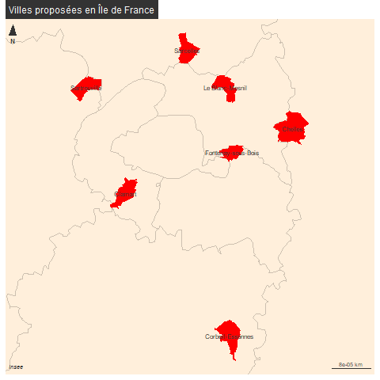
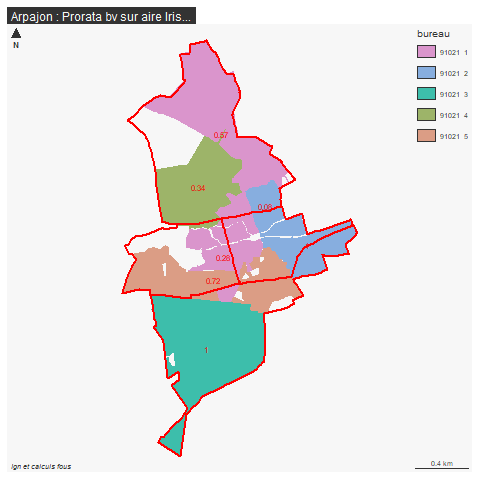
1.2.1.2 Les carreaux
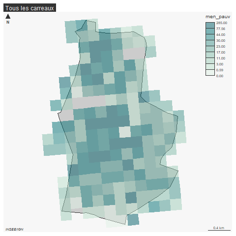
1.2.1.3 Les parcelles cadastrales
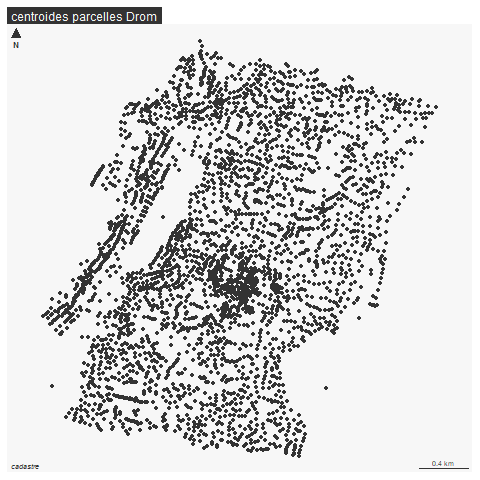
1.3 Base logement (IRIS)
1.3.3 Enregistrement par dpt
1.4 Carreaux Filosofi
library(sf)
library(mapsf)
car <- st_read("data/gros/carreaux_200m_met.gpkg")
# extraction du premier code insee du carreau
car$cog <- substring(car$lcog_geo,1,5)
carSel <- car [car$cog %in% cog$INSEE_COM,]
length(unique(carSel$cog))toujours 61
Bondy
bondy <- carSel [carSel$lcog_geo == '93010',]
plot(bondy$men_pauv, bondy$men_mais)
hist(bondy$men_pauv)
str(bondy)Enregistrement des carreaux par commune
valDpt <- unique(vfSel$Code.departement)
carSel$dpt <- substring(carSel$lcog_geo,1,2)
carSel <- carSel [,c(37,1:33), drop = T]
for (i in valDpt){
sel <- carSel [carSel$dpt == i,]
write.csv2(sel, paste0("data/examen/car/", i, "_carEXAMEN.csv"), fileEncoding = "UTF-8")
}Enregistrement des carreaux par dpt
1.5 Valeurs foncières
test bondy
bondy <- vfSel [vfSel$cog == '93010',]
tab <- table(bondy$Valeur.fonciere)
hist(bondy$Valeur.fonciere)
table(bondy$Voie [bondy$Valeur.fonciere > 30000000])
barplot(table(bondy$Voie [bondy$Valeur.fonciere < 3000]), las = 2)On enregistre le fichier.
on enregistre par dpt
valDpt <- unique(vfSel$Code.departement)
for (i in valDpt){
sel <- vfSel [vfSel$Code.departement == i,]
write.csv2(sel [, c(48,1:43)], paste0("data/examen/vf/", i, "_vfEXAMEN.csv"), fileEncoding = "UTF-8")
}on enregistre par dpt
2 Corrections
2.1 Généralités aux 3 groupes
Description des données et notamment de la base géographique
3 Choix des variables
4 Graphiques à commenter
4.1 Groupe 1 logement
4.1.1 Distribution du logement par nombre d’Iris
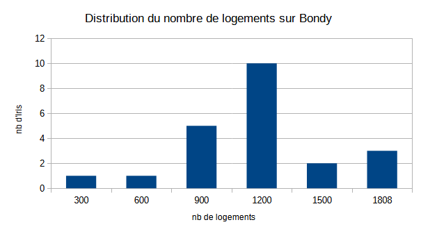
4.1.2 Ecart observés / théoriques ancienneté logement par iris
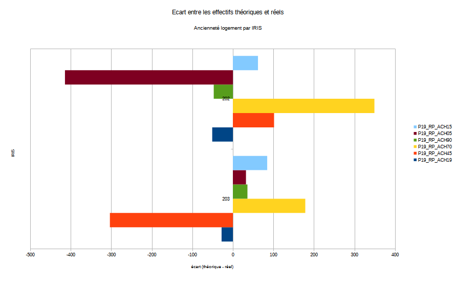
4.1.3 Distribution des khi2 partiels
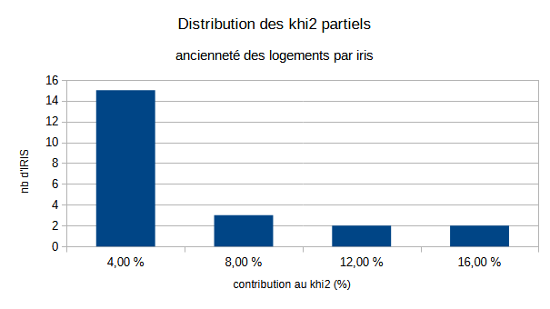
4.1.4 Régression
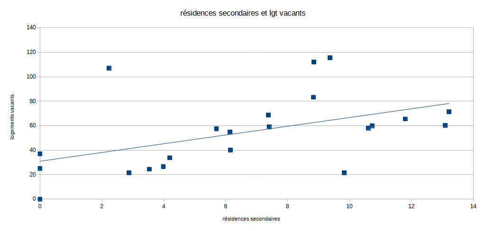
4.2 Groupe 2 Filosofi
4.2.1 Distribution du nb d’individus par carreaux
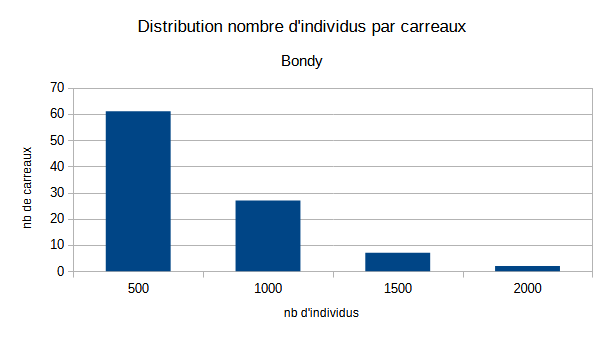
4.2.2 Ecart observés / théoriques tranches d’age population par carreau

4.2.3 Distribution des khi2 partiels
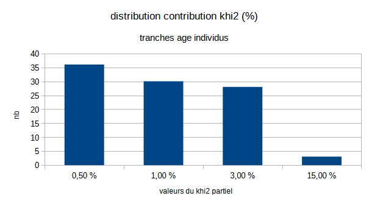
4.2.4 Régression
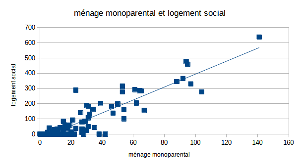
L5GEABIM Analyses bivariées et multivariées